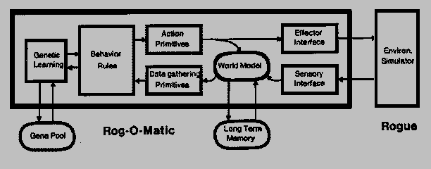
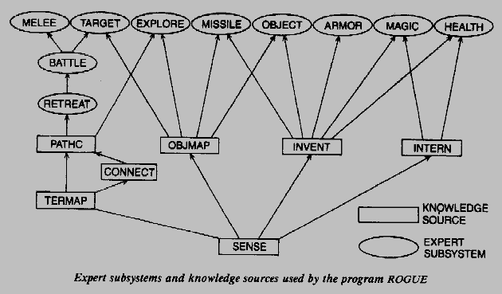
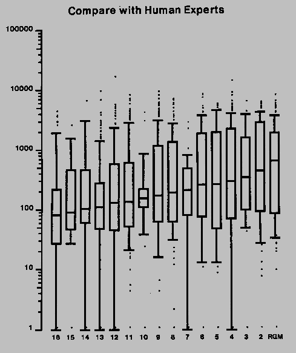

Rog-O-Matic plays the computer game Rogue, wherein the object is to explore and survive a complex and hostile environment. Rogue is an example of an exploration task.(Given an undirected planar graph, a starting node, and a visibility function which maps each node into a subset of nodes, exploration entails traversing edges so as to see all of the nodes. Minimizing the number of nodes visited is a subgoal.) Studying exploration requires two things: terrain to be explored, and an explorer to search it. There are four major advantages for choosing Rogue as a terrain generator:
The Rogue exploration task is complicated by adversaries whose goal is to prevent the explorer from reaching the lower levels. Carbonell has studied the problem of planning in an adversary relationship [2], but planning in Rogue is hampered by the randomness of the adversary. Where the probabilities are known, search trees can be built with each possible next state labelled with its transition probability. The action with the highest expected value can then be selected [1]. In Rogue, however, these probabilities are unknown to the player, and can change from game to game. Scenarios have also been used to analyze combat situations [8], but when unseen opponents can appear at any time, and when many of the combat parameters are unknown, choosing the right scenarios can be very difficult.
Rog-O-Matic is designed as an knowledge based or "expert" system because a search based system was completely infeasible. There are as many as 500 possible actions at any one time; for each action there are several thousand possible next states.
Rog-O-Matic differs from other expert systems in the following respects:
In this paper we introduce the Rogue environment and discuss the architecture, knowledge sources, and production rules used by Rog-O-Matic to explore that environment. We also discuss the system's implementation and compare its performance with that of human Rogue experts. For more a more detailed description of the program, see [6].
The Rogue game is described in more detail in [7]; an overview is given here. The environment is a cave composed of levels; each level contains between six and nine rectangular rooms connected by tunnels. The game player takes the role of explorer, searching for gold and fighting the monsters which guard the cave. Magical items such as potions or weapons are also scattered about, and these can be used to advantage in combat. Traps are hidden throughout the rooms to thwart careless players. The object of the game is to explore to the 26th level and retrieve the Amulet of Yendor. As the explorer goes deeper into the cave, the gold becomes more plentiful and the monsters become more difficult to defeat. As the explorer kills monsters in combat, he becomes a better fighter. On the average, monsters increase in ferocity faster than the player increases his skill, so reaching the 26th level is almost impossible. The player's score is the amount of gold he obtains, with bonuses given for retrieving the amulet.
Rog-O-Matic is a combination of algorithmic knowledge sources and production rules. Where uncertainty is low, algorithmic methods provide fast calculation of relevant information. Where uncertainty is high, heuristic production rules provide reasonable behavior. Knowledge sources and production rules interact through a world model or "blackboard" [3]. Because the system is implemented in an imperative language, the production rules are statically ordered. Dynamically ordered rules would have been much more complicated to code, and very few of the rules would benefit from this added complexity.

Figure 3-1: Rog-O-Matic System Architecture
Figure 3-1 shows the Rog-O-Matic high-level system architecture. Rog-O-Matic plays the game by intercepting characters from the terminal stream, and sending command characters back to the Rogue process. The input interface must convert a stream of characters designed to draw a meaningful picture on a CRT screen into a representation of the world state. This function is performed by the sensory module. The less difficult task of converting motion and action directives into Rogue commands is done by the effector module, which is shown mainly for symmetry. Langley et al have described the advantages of simple sensory/effector interfaces in studying a reactive environment [5]. The long term memory file is a portion of the world model which is saved between games. All long term learning is achieved by modifying this file.
The world model is operated on by a variety of knowledge sources, which take low level data from the world model and process it into higher level information. Eventually, the information is encoded at a sufficiently high level for the rules to operate directly on it. The action primitives also change the world model. This feedback permits the production rules to encode inference mechanisms and short term memory. A partial list of knowledge sources is given here:

Figure 3-2: Experts (ovals) and Knowledge Sources (boxes)
The rules are grouped hierarchically into experts; each expert performs a related set of tasks. These experts are prioritized in order of estimated contribution to survivability. For example, if the melee expert decides that a monster must be dispatched, that decision overrides the advice of the object acquisition expert calling for an object to be picked up. If the melee expert suggests no action, then the object acquisition expert's directive is acted upon. The basic structure resembles a directed acyclic graph (DAG) of IF-THEN-ELSE rules. Figure 3-2 shows the information flow between these experts. Here is a list of the most important experts:
Of the algorithmic knowledge sources, the path calculator is the most interesting. It reads the terrain map and determines weighted shortest paths from Rog-O-Matic to the nearest location satisfying specified criteria (such as the nearest unknown object, or the nearest escape route). The edge costs are small, bounded integers which encode known or possible dangers (such as traps or unexplored squares). A breadth-first search explores outward from the current location, and any square with a non-zero cost (an avoidance value) has its cost decremented and then square is placed unexamined at the end of the search queue. The result is a weighted shortest path obtained in time linear to the number of terrain squares. Since exploration requires the system to spend most of its time moving, a fast path calculator is essential.
Most of the actions taken by Rog-O-Matic are simpler than movement, and these actions are performed directly by the production rules. For example, when the melee expert has determined that a battle is underway, it puts certain key parameters of the battle, such as the strength of the monster, the number of turns which the monster will require to reach the player, and its direction, into the blackboard and invokes the battlestations expert. Battlestations decides whether to attack with the weapon currently in hand, attack with a special magic item, or to retreat. Figure 3-3 shows some sample rules extracted from battlestations.
/*
* If we can die in 1 turn and we are not at peak strength, we might want
* to retreat. Don't try to run if we are confused or being held by
* something. If we are on a door, wait until the monster is next to us
* (that way we can shoot arrows at him, while he catches up). Don't run
* away from Dragons!!! They'll just flame you from behind.
*/
if ((die_ in (1) && Hp+Explev < Hpmax) &&
!confused && !beingheld && (!on(DOOR) || turns < 1) &&
!streq(monster, "dragon") &&
runaway ())
{ display ("Run away! Run away!"); return(1); }
/*
* We can't run and there is a monster next to us who could kill
* us in 1 turn. If we have a scroll of teleportation, read it.
*/
if (die_ in (1) && turns == 0 &&
(obj = havenamed (scroll, "teleportation")) >= 0 && reads (obj))
{ return (1); }
Figure 3-3: Sample Rules from the Battlestations Expert
There are two kinds of learning in Rog-O-Matic: short term, for object recognition, and long term for monster characteristics. Short term learning is used to gather information about the offensive and defensive weaponry available to the player. Proper use of this weaponry is crucial to success in Rogue. At the beginning, the player does not know the characteristics of the majority of the objects in the game. Knowledge about items can be gained through experimentation, or by using the various Identify scrolls in the game. This kind of learning is closed, since there are fewer than 50 different things any object can be. A hand-coded database is used to match the results of experimentation (ie trying an item to see what it does) with the nature and use of that item.
A more interesting problem is learning about monster characteristics. When deciding whether to attack or retreat, an accurate estimate of the opponent's strengths and weaknesses is needed. A hardwired table of these estimates was used in early versions of Rog-O-Matic, but the monsters were changed in the latest release of Rogue (version 5.3). Rather than build another table by hand, we added a learning package which keeps track of the offensive and defensive strength of each monster encountered. These values are retained from game to game, and are stored in the long term memory file. This kind of learning is not intended to increase performance (since the earlier versions already had perfect information about monster characteristics), but to provide flexibility for the program. Changes in the opponents do not require changes in the program.
Rog-O-Matic runs on a Vax 11/780 under the Berkeley Unix operating system. It is composed of 12,000 lines of C code; C was chosen for convenience and speed. It offers direct access to the operating system primitives required to interface to the Rogue game (a necessity, since we wanted our program to play exactly the same game as the human players). C code also runs much faster than most production systems languages, and this speed was necessary for Rog-O-Matic to play enough games for its performance to be measured. The program takes about 30 CPU seconds (generating about 400 actions) to explore one level, and Rogue takes an additional 15 CPU seconds calculating its part of the simulation. At CMU, Rog-O-Matic has played more than 7000 games in two years. Rog-O-Matic is also running at more than 36 installations in the US, Canada, and England.
Evaluation of expert systems can be a difficult problem [4], but two measures of a game playing program are obvious: its reputation among its competitors and its raw scores. Rog-O-Matic has garnered a very favorable reputation as an expert Rogue player, and many human players have reported learning a lot about Rogue both by watching it play and by reading the source code.
We compared Rog-O-Matic scores with 15 of the best Rogue players at CMU over a two month period, and Rog-O-Matic played as well as the human experts. Figure 5-1 shows percentile plots of these games, sorted by median score. Rog-O-Matic obtained the seventh best high score and the best median score of any player. Rog-O-Matic has also been a so-called Total Winner against both Rogue 3.6 and Rogue 5.2.

Figure 5-1: Log Scores vs. Player, Sorted by Median
The graph includes all players with ten or more games against Rogue (version 5.2) on the GP-Vax at CMU. The data were collected over a two month period from January 1, 1983 to February 21, 1983. Boxes are drawn from the lower quartile to the upper quartile, with a line at the median. The whiskers are drawn at the 10th and 90th percentile marks, and extreme games are plotted as asterisks. The vertical scale is the score (drawn logarithmically) and the horizontal scale is the player's rank. The vertical scale is drawn logarithmically because Rogue scores approximate a log-normal distribution.
The static ordering used prevents some Rogue tactics from being cleanly represented. An example is the use of armor. In certain cases the best armor should be worn, and in other cases the second best armor should be worn. The rule calling for the best armor must be disabled while the second best armor is in place, and yet be reactivated at the right time. Each of these dependencies requires a new global variable in short term memory. Dynamic rule ordering might be a cleaner way to solve this problem.
Another problem is single-mindedness. For example, when running from a monster, it is often possible to pick up objects on the way to an escape route. Since Rog-O-Matic does not consider that a single action may satisfy multiple goals, the program fails to take advantage of such situations. In other cases the presence of a secondary factor requires more creative actions than are currently possible. This problem is most severe when Rog-O-Matic has to combat multiple monsters. Its heuristic is to fight the most dangerous monster first, but there are situations in which this rule fails miserably. In Rogue, failing miserably usually results in death.
By combining efficient algorithmic knowledge sources with a rule based control mechanism, we have produced a program demonstrably expert at the game of Rogue. The result is a system capable of performing exploration tasks while also fulfilling the goal of self-preservation. The system can function well in the face of uncertain dangers, make well considered fight or flight decisions, and retreat successfully when it faces overwhelming opposition. Short term and long term learning have provided sufficient flexibility to handle a changing environment, and reduced the programming time required to handle newer versions of Rogue.
Our most important goal for the future is to enhance the learning component. Many more features of the game can be learned, requiring less knowledge transfer from an outside expert, and increasing the program's flexibility. We hope that this learning ability will also result in much higher scores.
We would like to thank the Rog-O-Matic user communities at both CMU and across the ARPANet for their thousands of hours of testing, and also the many adventuresome Rogue players who provided many, many data points on human Rogue performance. Kudos to Damon Permezel, of the University of Waterloo, for running the first Rog-O-Matic to be a total winner against Rogue 5.2. And of course, special thanks go to Ken Arnold and Michael Toy for creating a very interesting (and very, very hostile) environment.